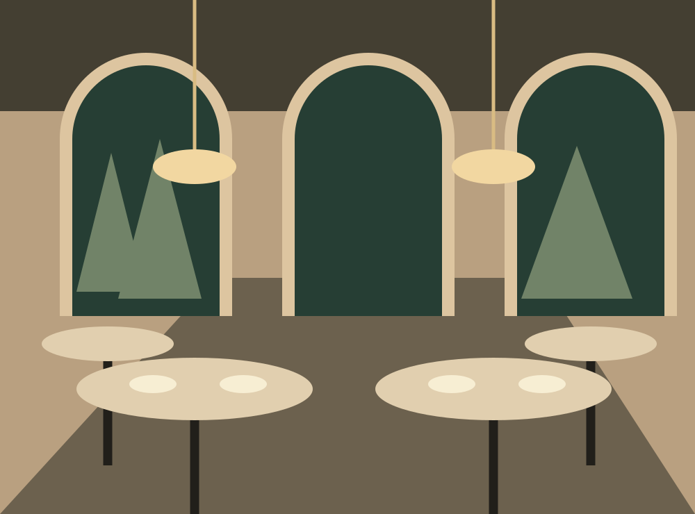

Gather, together
An evening of your own
An intimate room and a shared plant-based menu for your fictional celebration.

Image 1 of 2
Additional artwork: view the seasonal plate illustration.

A room for conversation
Imagine a softly lit space for a small celebration, a family supper, or a team gathering. Seasonal shared dishes anchor the evening.
Private dining information is illustrative. No real venue capacity, pricing, availability, or inquiry service is provided. A live inquiry form was outside the approved scope.
Explore sample dishesAbout the dining room